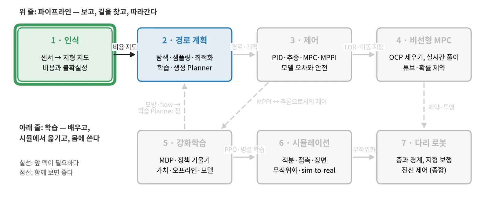
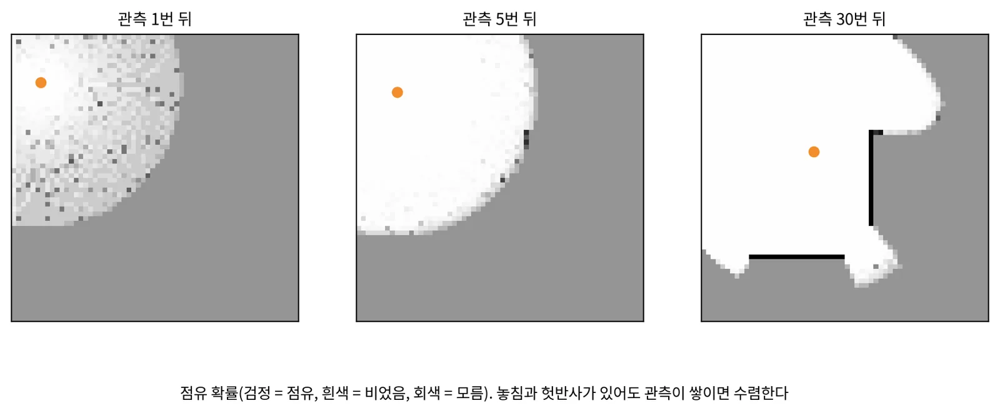
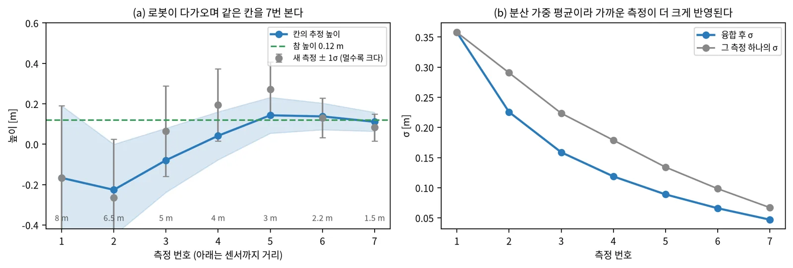
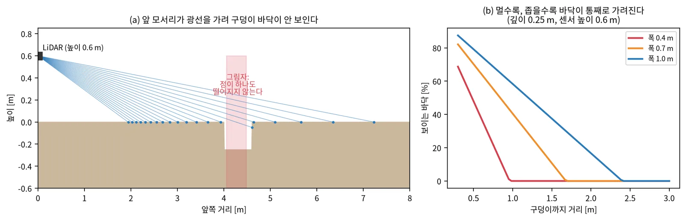
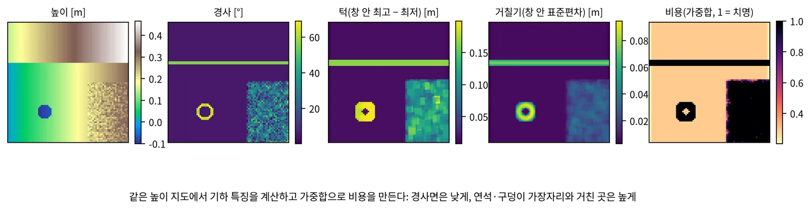
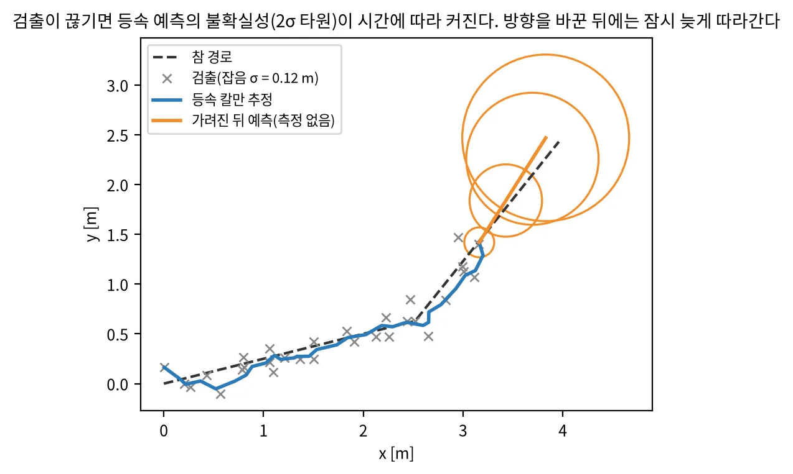
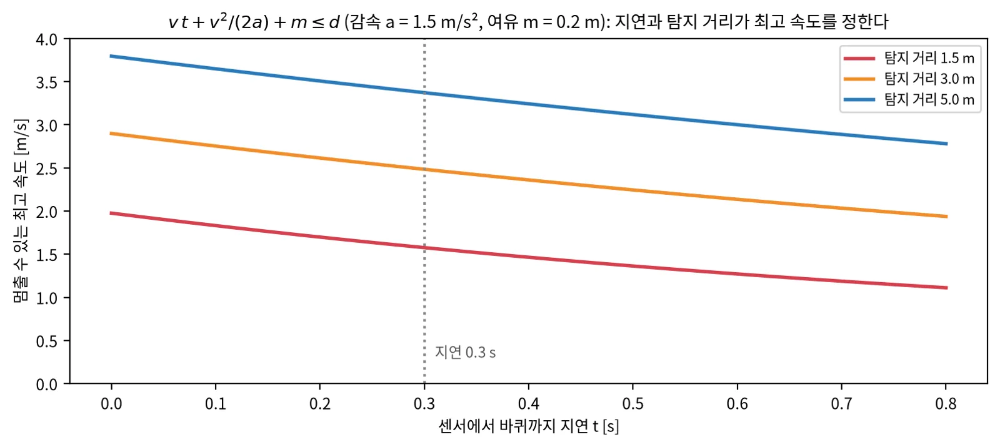

로봇 인식 기초 · 개념 공부 덱
센서 관측을
움직일 수 있는 지도로
점유 격자와 높이 지도, 음의 장애물과 못 본 칸, traversability 자기지도, 시각 기반 모델, 사람 검출·추적·예측까지 — 그림과 배경지식과 장단점으로 보는 내비게이션 인식
점유 격자 · 높이 지도
못 본 칸
Traversability
시각 기반 모델
추적 · 예측 · 보정
순서
지도, 비용, 사람의 세 갈래로 간다
| 장 | 주제 | 답하는 질문 |
|---|---|---|
| 0 | 시작 | 인식은 무엇을 받아 무엇을 내나? 센서마다 무엇이 다른가? |
| 1 | 지형 지도 | 관측을 어떻게 격자에 쌓나? 구덩이와 못 본 칸은? |
| 2 | Traversability | "지나갈 수 있나"를 어떻게 숫자로, 라벨 없이 배우나? |
| 3 | 시각 기반 모델과 동적 장애물 | 큰 모델은 어디에 쓰나? 사람은 어떻게 따라가고 예측하나? |
| 4 | 정리 | 지연·속도, 방법별 장단점, 흔한 함정, 공부 순서 |
0 · 커리큘럼 1/7
첫 덱이다: 지도가 뒤의 모든 덱의 입력이 된다

없다. 확률(기댓값, 가우시안, 베이즈 규칙)과 행렬 곱이면 시작할 수 있다.
비용 지도 → 2 경로 계획. 지도의 분산 σ와 사람 추적 → 3 제어의 위험·안전 장.
높이 지도 관측 → 7 다리 로봇의 지형 보행. 지연과 속도 → 3 제어의 지연 장.
0 · 배경지식
네 가지 배경지식이면 이 덱을 따라올 수 있다
센서 → 로봇 → 지도 좌표
점 하나를 \(p_{\text{map}} = T_{\text{map}\leftarrow\text{base}}\, T_{\text{base}\leftarrow\text{sensor}}\, p\)로 옮긴다. 자세 추정이 틀리면 지도가 번진다.
믿음 × 새 증거
\(p(m \mid z_{1:t}) \propto p(z_t \mid m)\, p(m \mid z_{1:t-1})\). 지도는 관측을 하나씩 더해 가는 믿음이다.
멀수록, 비스듬할수록 크다
깊이 오차는 거리에 따라 커진다(스테레오는 거리의 제곱). 측정마다 분산을 붙여 합친다.
공간을 칸으로 나눈다
칸 크기(해상도)가 작은 턱을 볼 수 있는지와 계산량을 함께 정한다.
0 · 인식의 일
인식은 센서 관측을 지형 지도와 동적 장애물 목록으로 바꾼다
센서
LiDAR, 스테레오·깊이 카메라, 단안 카메라, IMU
→
지형 지도
높이·경사·턱·거칠기·불확실성 격자
→
비용
지나갈 수 있는 정도(traversability)
→
계획·제어
경로, 궤적, 명령
영상
사람·차·킥보드
→
검출
상자·마스크
→
추적
ID를 이어 속도 추정
→
예측
몇 초 뒤 위치와 불확실성
| 지도 표현 | 담는 것 | 장점 | 단점 |
|---|---|---|---|
| 2D 점유 격자 | 칸마다 점유 확률 | 단순, 실내 표준 | 경사·턱·구덩이를 못 담는다 |
| 2.5D 높이 지도 | 칸마다 높이(+분산) | 실외 지형, 가볍다 | 오버행(다리 밑, 나뭇가지) 표현 못 함 |
| 3D voxel·ESDF | 칸마다 점유·거리 | 오버행, 3D 거리 | 메모리·계산이 크다 |
0 · 센서
센서는 거리 정확도, 해상도, 가격, 날씨에 따라 고른다
| 센서 | 주는 것 | 장점 | 단점 |
|---|---|---|---|
| LiDAR | 정확한 3D 점(수십 m) | 거리 정확, 조명 무관 | 비싸고 성기다, 검은·젖은 면에 약함 |
| 스테레오 카메라 | 조밀한 깊이(수 m) | 싸고 조밀, 색도 함께 | 거리 제곱으로 오차, 무늬 없는 면에 약함 |
| 단안 카메라 | 영상(+학습 깊이) | 가장 싸고 의미가 풍부 | 축척을 모른다, 조명·날씨 |
| 레이더 | 거리·속도(성긴 점) | 비·안개에 강함, 속도 직접 | 해상도 낮음, 지형에 약함 |
| IMU·바퀴 오도메트리 | 자기 운동 | 빠르고 늘 있다 | 시간에 따라 표류 |
실무: 거리는 LiDAR나 스테레오가, 의미(사람·킥보드)는 카메라가 맡고, 둘을 시간·좌표로 맞춘다.
1 · 지형 지도
잡음 섞인 관측을
칸마다 확률로 쌓는다
점유는 log-odds로, 높이는 분산 가중 평균으로. 위험한 것은 아예 관측되지 않는 칸이다.
1 · 점유 격자
점유 격자는 관측마다 log-odds를 더해 확률을 쌓는다

덧셈 하나라 빠르고, 잡음을 자연스럽게 평균한다. 상한·하한을 두면 변하는 환경에도 반응한다.
칸이 서로 독립이라고 가정한다. 높이·경사를 담지 못한다. 자세가 틀리면 벽이 두꺼워진다.
1 · 높이 지도
높이 지도는 칸마다 높이와 분산을 칼만 갱신으로 합친다

칸마다 1차원 칼만이라 GPU로 수만 칸을 실시간에. 분산이 "얼마나 믿을 만한가"를 함께 준다.
칸에 높이 하나뿐이라 오버행을 못 담는다. 움직이는 물체가 지나가면 흔적이 남는다.
1 · 실제 구현
elevation mapping은 높이 융합에 가시성 정리와 상한 층을 더했다
- 로봇 중심 2.5D 격자, 칸마다 1차원 칼만 갱신
- GPU 판(elevation_mapping_cupy): CUDA 커널, 학습 traversability 필터
- 가시성 정리: 광선이 지나간 자리에 남은 옛 높이(지나간 사람 등)를 지운다
- 상한 층: 광선이 지나간 칸의 지면은 광선보다 높을 수 없다
- Orin Nano에서 0.025 m, 200×200칸 지도를 30 Hz로 돌린 보고
4족 보행 로봇(ANYmal)에서 시작해 휴머노이드·바퀴 로봇까지 같은 스택이 쓰인다.

Fankhauser 외, Probabilistic Terrain Mapping (CLAWAR 2014, RA-L 2018) · Miki 외, Elevation Mapping for Locomotion and Navigation using GPU, IROS 2022 — arXiv:2204.12876
1 · 음의 장애물
구덩이는 관측되지 않고 그림자로만 남는다

광선 높이를 칸 높이의 상한으로 둔다(elevation mapping).
주변 지면을 외삽한 기대 높이와 관측의 차를 본다(G-VOM).
그림자에 이웃 최소 고도를 채워 인공 단차를 만든다.
G-VOM, IEEE IV 2022 — arXiv:2109.13176 · Mozzarelli 외(보도 배달로봇) — arXiv:2403.13431
1 · 못 본 칸
못 본 칸은 불확실성으로 전파하거나 생성 모델로 채운다
가림을 자세 분산으로
지형 불확실성을 차체 pitch·roll 분산으로 전파한다. 실패율 18.9%, 기준선 46.1%·41.7%.
공간 상관 분산
칸이 독립이 아니라 이웃과 상관된 공분산. 궤적 오차(ATE) 2.4277 → 0.6588.
확산 모델로 채움
못 본 voxel만 생성 확률로 갱신. 추론 0.44 s. 못 본 구덩이를 평평하게 덮을 위험.


원칙: 안전에 쓰는 비용은 보수적으로(모르면 위험), 생성 채움은 탐색과 경로 후보에만.
1 · 학습 기반 지도
자동차는 카메라에서 바로 BEV·occupancy를 추론한다
Lift-Splat-Shoot
픽셀별 깊이 분포로 특징을 들어 위에서 본 격자에 뿌린다
BEVFormer
격자 query가 attention으로 여러 카메라 특징을 모은다
Occ3D, FlashOcc
3D 점유 격자를 예측. FlashOcc는 2D 합성곱만 써 배포 친화

카메라만으로, 의미까지 한 번에.
차를 둘러싼 멀티카메라 리그와 큰 GPU를 전제. 정답 만들기가 비싸다.
Lift-Splat-Shoot, ECCV 2020 — arXiv:2008.05711 · BEVFormer, ECCV 2022 — arXiv:2203.17270
1 · 장단점
지도 만드는 법은 정확함, 표현력, 계산을 맞바꾼다
| 방법 | 장점 | 단점 | 잘 맞는 곳 |
|---|---|---|---|
| 2D 점유 격자(log-odds) | 단순, 빠름, 잡음에 강함 | 높이 정보 없음 | 실내, 평평한 바닥 |
| 2.5D 높이 지도(칼만) | 지형·분산, GPU 실시간 | 오버행, 움직이는 물체 흔적 | 실외 바퀴·보행 로봇 |
| 3D voxel·ESDF | 오버행, 거리장 | 메모리·계산 | 드론, 팔, 복잡한 3D |
| 학습 BEV·occupancy | 카메라만, 의미 포함 | 큰 GPU, 정답 비용, 분포 밖 | 자동차 |
| 생성 채움 | 못 본 곳도 그럴듯하게 | 위험을 덮을 수 있다 | 탐사, 후보 생성 |
핵심: 표현을 고른 다음에는 "모르는 칸을 어떻게 다루나"가 안전을 정한다.
2 · Traversability
"이 땅을 지나갈 수 있는가"를
숫자로 만들고, 경험으로 고친다
기하 규칙에서 출발해, 로봇이 실제로 겪은 사건으로 사람 라벨 없이 배운다.
2 · 기하 비용
높이 지도에서 경사·턱·거칠기를 계산해 비용으로 합친다

해석이 쉽고 학습이 필요 없다. 로봇의 한계(오를 수 있는 턱, 경사)를 바로 반영한다.
키 큰 풀은 벽으로, 미끄러운 타일은 평지로 본다. 기하가 같아도 재질에 따라 다른 것을 모른다.
2 · 계보
라벨의 출처가 사람에서 로봇이 겪은 사건으로 바뀌었다
| 연도 | 이름 | 라벨 출처 |
|---|---|---|
| 2020 | RELLIS-3D | 사람 라벨(20클래스) |
| 2020 | BADGR | 충돌·충격 사건 |
| 2022 | TerraPN | IMU 진동·주행거리 오차 |
| 2022 | How Does It Feel? | 고유 감각(proprioception) 비용 |
| 2023 | WVN, STERLING | 주행 자국 + 고정 DINO 특징 |
| 2024 | V-STRONG, RoadRunner | 주행 궤적, 기존 스택 사후 추정 |
| 2026 | SyNeT, GSAT, PIVOT | 주행 자국 양성 + PU, VLM |

사람 라벨이 필요 없고, 그 로봇의 실제 능력을 배운다.
가 본 곳만 안다. 위험한 사건은 일부러 모으기 어렵다.
RELLIS-3D arXiv:2011.12954 · BADGR arXiv:2002.05700, RA-L 2021
2 · PU 문제
지나간 곳은 양성이지만, 안 간 곳은 음성이 아니라 "모름"이다
SyNeT
확산 inpainting으로 지나갈 수 없는 물체를 영상에 넣는다. AUROC 0.935 → 0.979, Orin INT8 11.6 FPS.
GSAT
양성 잠재 둘레 초구 밖을 이상으로 본다. LiDAR 기하만. Gazebo 10/10, 기하 규칙 4/10.
nnPU
양성과 라벨 없는 자료만으로 분류 위험을 편향 없이 추정한다. 개입 14회 → 2회(LHT).


SyNeT arXiv:2602.00814 · GSAT arXiv:2603.07480, ICRA 2026 · Long-Horizon Traversability arXiv:2607.23743
2 · 배경지식 · 공간 보간
듬성한 라벨은 거리 가중으로 퍼뜨리고, 먼 곳은 불확실하게 둔다

GP와 비슷한 매끄러움과 불확실성을, 희소 커널로 빠르게. 칸마다 증분 갱신.
커널 반경이 경계(턱, 구덩이 가장자리)를 흐린다. 반경 밖은 사전값으로 돌아간다.
2 · VLM의 자리
VLM은 기본 비용이 아니라 막혔을 때의 보조 판단으로 쓴다
기하 계획이 막힐 때만 VLM 재계획. 자율 비율 59.6% → 97.0%, 개입 11 → 3회.
비슷한 장면은 이전 위험 평가를 재사용. VLM 호출 85.7% 감소.
SAM2에 traversability prompt를 넣고 기하 지식을 증류한다.

핵심: 느리고 비싼 모델은 드문 상황에만, 그리고 결과를 캐시해서 쓴다.
PIVOT arXiv:2609.20983 · CATNAV arXiv:2603.22800
2 · 장단점
비용을 만드는 법은 라벨의 출처로 갈린다
| 방법 | 라벨 | 장점 | 단점 |
|---|---|---|---|
| 기하 규칙 | 없음(한계값) | 해석 쉬움, 학습 불필요 | 재질·의미를 모른다 |
| 의미 분할 | 사람 라벨 | 풀·물·계단을 구별 | 비싸고 도메인 밖에서 무너짐 |
| 자기지도(경험) | 주행 자국, 진동, 충돌 | 그 로봇의 실제 능력 | PU 문제, 가 본 곳만 |
| 기반 모델 특징 + 적응 | 소량 경험 | 빠른 적응(분 단위) | 큰 백본, 실시간 부담 |
| VLM 보조 | 상식 | 드문 상황 판단 | 느림, 근거 확인 필요 |
실무 순서: 기하 규칙으로 안전 바닥을 깔고, 경험으로 고치고, VLM은 막혔을 때만.
3 · 시각 기반 모델과 동적 장애물
큰 모델은 교사로 쓰고,
사람은 검출·추적·예측으로 따라간다
완벽한 예측도 얼어붙기를 풀지 못하고, 예측의 오차 폭은 따로 맞춰야 한다.
3 · 시각 기반 모델
시각 기반 모델은 로봇에서 돌리기 전에 라벨 교사로 먼저 쓴다
| 이름 | 내는 것 |
|---|---|
| DINOv2 · DINOv3 | 범용 영상 특징(패치 단위) |
| Depth Anything V2 · 3 | 단안 깊이 |
| SAM 2 · SAM 3 | 영상 분할(지정·명사구) |
| Grounding DINO | 글로 지정한 물체 상자 |

고정 특징 위에 작은 머리만 학습해 몇 분 만에 적응(WVN).
마스크·깊이를 오프라인으로 만들어 작은 실시간 모델로 증류.
킥보드·볼라드처럼 학습 클래스 밖의 물체를 글로 지정.
DINOv2 arXiv:2304.07193 · DINOv3 arXiv:2508.10104 · Depth Anything V2 arXiv:2406.09414 · SAM 2 arXiv:2408.00714 · Grounding DINO arXiv:2303.05499 · 가중치 라이선스는 모델마다 다르니 확인 후 사용
3 · 단안 깊이
단안 깊이는 모양을 주지만 축척은 따로 맞춰야 한다
"어느 쪽이 더 먼가"
축척과 이동을 모른다. \(d_{\text{참}} \approx s\, d_{\text{예측}} + t\)의 s, t를 LiDAR 점 몇 개나 지면 평면으로 맞춘다.
카메라 내부 파라미터로 바로 미터
학습 분포의 카메라와 비슷할 때만 믿을 만하다. 처음 보는 렌즈·높이에서 축척이 틀린다.
| LiDAR·스테레오 | 학습 단안 깊이 | |
|---|---|---|
| 거리 정확도 | 센티미터 수준 | 거리에 비례한 상대 오차 |
| 조밀함 | 성기다(LiDAR) | 픽셀마다 |
| 실패 방식 | 반사·무늬 없는 면 | 그럴듯하지만 틀린 값(조용히 틀린다) |
| 잘 맞는 쓰임 | 안전 거리, 높이 지도 | 빈 곳 채우기, 가짜 라벨, 근거리 보조 |
3 · 검출 · 거리 · 추적 · 예측
사람은 영상에서 찾고, 거리는 깊이로 재고, 추적은 지도 좌표에서 한다
검출
실시간 검출기(YOLO 계열, RT-DETR, D-FINE, RF-DETR)
→
거리
상자에 투영되는 LiDAR 점·깊이로 3D 중심
→
추적
지도 좌표의 칼만 필터 + 헝가리안 매칭
→
예측
등속 모델이 기준선, 시간에 따라 커지는 원판
| 검출기 | COCO 성능(논문 보고, T4) | 코드 라이선스 |
|---|---|---|
| RT-DETR | R50 53.1 AP, 108 FPS | Apache-2.0 |
| D-FINE | L 54.0 AP, 124 FPS | Apache-2.0 |
| RF-DETR | 2x-large가 실시간 첫 60 AP | Apache-2.0 |
| Ultralytics YOLO | 모델마다 다름 | AGPL-3.0(상용은 별도 라이선스) |
RT-DETR (CVPR 2024) · D-FINE (ICLR 2025) · RF-DETR (ICLR 2026) · ByteTrack (ECCV 2022) · BoT-SORT
3 · 추적과 예측
등속 칼만 필터는 잡음을 걸러 속도를 주고, 가려지면 불확실성을 키운다

싸고 강하다. 보행자 예측에서 신경망 모델과 비슷하거나 나은 경우가 많다. 불확실성이 시간에 따라 커지는 원판으로 안전 여유를 준다.
방향 전환·멈춤·상호작용을 모른다. 생성 예측(Trajectron++, MoFlow)은 상호작용이 문제일 때 본다.
Schöller 외, What the Constant Velocity Model Can Teach Us About Pedestrian Motion Prediction, RA-L 2020 — arXiv:1903.07933
3 · 얼어붙는 로봇
개별 예측이 완벽해도 사람들 사이에서 로봇은 얼어붙을 수 있다
"even under perfect individual prediction … the FRP still occurs if the crowd adopts specific configurations."
Trautman 외, IJRR 2015
원인은 정확도가 아니라 구조다. 예측이 로봇의 행동과 무관하게 한 번 계산되면, 나란히 걷는 사람들 앞에서 "모든 길이 막혔다"가 된다.

PGIF-MPPI 복도 300 시나리오(시뮬)
| 희박 | 중간 | 조밀 | |
|---|---|---|---|
| 기준선 성공 | 78.0 % | 29.0 % | 18.0 % |
| 충돌 | 22.0 % | 71.0 % | 82.0 % |
| PGIF 성공 | 93.0 % | 78.0 % | 41.0 % |
| 충돌 | 0.0 % | 0.0 % | 0.0 % |
| 타임아웃 | 7.0 % | 22.0 % | 59.0 % |
충돌이 사라진 자리를 타임아웃이 채운다.
Trautman 외, IJRR 2015 (원 논문 IROS 2010) · PGIF-MPPI arXiv:2608.08323 · Mavrogiannis 외 arXiv:2103.05668
3 · 예측 보정
예측 오차의 폭은 학습 때 맞추거나 배포 중에 conformal로 맞춘다

정답의 Mahalanobis 거리가 카이제곱 분포를 따르도록 손실을 준다(Calibrated Gaussian Predictors).
지평별 conformal 문턱을 온라인으로 맞추고 MPC 해를 그 범위로 검사한다. 12명 정면 흐름 성공 100 %, 충돌 0 %(CoCoNav).

Calibrated Gaussian Predictors arXiv:2603.10407 · CoCoNav arXiv:2608.07751
3 · 장단점
동적 장애물 처리는 단순한 기준선에서 시작해 필요한 만큼만 키운다
| 단계 | 선택지 | 장점 | 단점 |
|---|---|---|---|
| 검출 | 실시간 검출기 vs 기반 모델 | 빠름 vs open-set | 클래스 한정 vs 무거움 |
| 거리 | LiDAR 투영 vs 단안 깊이 | 정확 vs 조밀 | 성김 vs 축척 |
| 추적 | 영상 평면 vs 지도 좌표 | 구현 쉬움 vs 회전에 강함 | 로봇 회전에 약함 vs 자세 의존 |
| 예측 | 등속 vs 학습·생성 | 싸고 강함 vs 상호작용 | 반응 모름 vs 무겁고 검증 어려움 |
| 불확실성 | 고정 여유 vs 보정 | 단순 vs 근거 있는 폭 | 과신·과소신 vs 보정 자료 필요 |
평가: 예측 정확도(ADE)보다 폐루프 지표 — 충돌 수, 최소 여유 거리, 멈춤 시간 — 로 판단한다.
4 · 정리
인식의 지연과 탐지 거리가
로봇의 최고 속도를 정한다
지연·속도 예산, 다른 로봇의 인식, 장단점 표, 흔한 함정, 공부 순서.
4 · 지연과 속도
지연 동안 가는 거리와 제동 거리가 탐지 거리 안에 들어와야 한다

| 층 | 흔한 주기 |
|---|---|
| LiDAR·높이 지도 | 10 Hz |
| IMU | 200 Hz 이상 |
| 계획 | 5–10 Hz |
| 제어 | 10–50 Hz |
| 구동기 | 100 Hz 이상 |
센서 노출 + 전송 + 지도 갱신 + 계획 + 제어 한 주기. 평균이 아니라 최악을 더한다.
4 · 다른 로봇에서
몸이 지형과 닿는 방식이 인식 설계를 정한다
| 로봇 | 지배적 제약 | 대표 접근 |
|---|---|---|
| 자동차 | 고속, 멀리 보기, 차선·신호 | 멀티카메라 BEV·occupancy, world model |
| 4족 보행 | 미리 보지 않으면 큰 장애물을 못 넘음 | elevation map + 자기지도 traversability |
| 휴머노이드 | 두 점 지지, 자기 몸 가림 | 발밑 복원, 전신 occupancy |
| 바퀴 지상 로봇 | 턱·구덩이, 근거리 사람, 차체 사각 | 높이 지도 + 그림자 처리 + 카메라 검출 |
| 드론 | 3D 자유 공간, 무게·전력 | voxel·ESDF, 가벼운 깊이 센서 |
자동차 world model은 대부분 데스크톱 GPU급이다. "위험할 때만 다시 계획" 같은 설계 아이디어를 가져온다.
지형을 완벽히 재구성하지 않아도, 얼마나 믿을 만한지를 함께 알면 된다.
4 · 장단점 표
인식 구성 요소를 한 표로 본다
| 구성 요소 | 기본 선택 | 장점 | 단점 | 다음 단계 |
|---|---|---|---|---|
| 지도 | 2.5D 높이 지도 | 실외, GPU 실시간 | 오버행 | 여유 높이 층, 3D voxel |
| 못 본 칸 | 보수적(상한, 위험) | 안전 | 오탐으로 멈춤 | 불확실성 전파 |
| 비용 | 기하 규칙 | 해석 쉬움 | 재질 모름 | 자기지도로 보정 |
| 라벨 | 주행 경험 | 사람 라벨 불필요 | PU 문제 | 음성 합성, nnPU |
| 영상 이해 | 기반 모델을 교사로 | open-set, 적은 라벨 | 무겁다 | 증류한 작은 모델 |
| 사람 | 검출 + 칼만 + 등속 | 싸고 강함 | 상호작용 모름 | 상호작용 예측 |
| 불확실성 | 분산·원판 | 안전 여유 | 과신 가능 | 보정(conformal) |
4 · 흔한 함정
지도가 이상하면 먼저 자세, 시간 동기, 칸 정렬을 의심한다
자세 추정 오차
지도가 번지거나 벽이 두꺼워지면 위치·자세 추정부터 본다.
시간 동기
센서와 자세의 타임스탬프가 어긋나면 회전할 때 지도가 휜다.
칸 정렬
지도 칸과 다른 모듈의 칸이 반 칸만 어긋나도 가장자리 판정이 틀린다.
"점이 없음"을 평지로
관측이 없는 칸을 0 높이로 채우면 구덩이가 사라진다.
σ를 그대로 믿기
분산이 실제 오차를 명목 비율만큼 덮는지 따로 잰다.
프레임 지표만 보기
IoU·ADE보다 폐루프의 충돌·멈춤·치명 실패로 평가한다.
4 · 공부 순서
확률 로봇공학으로 기초를, 구현으로 감을, 논문으로 학습 인식을 익힌다
Thrun·Burgard·Fox, Probabilistic Robotics
베이즈 필터, 칼만 필터, 점유 격자(9장), 센서 모델.
작은 문제를 직접
2D 광선 투사 + log-odds 격자 → 높이 칼만 융합 → 경사·턱 비용 → 등속 칼만 추적.
논문 순서
elevation mapping → BADGR → WVN → DINOv2 → 검출기 하나 → 등속 예측 논문 → conformal.
| 이 덱의 장 | 스스로 확인할 질문 |
|---|---|
| 1 지도 | log-odds로 바꾸면 왜 덧셈이 되나? 구덩이는 왜 안 보이나? |
| 2 Traversability | 자기지도에서 "안 간 곳"을 음성으로 두면 무엇이 틀리나? |
| 3 동적 장애물 | 예측이 완벽해도 로봇이 얼어붙는 이유는? |
| 4 정리 | 지연이 두 배가 되면 최고 속도는 어떻게 되나? |
정리
인식은 관측을 쌓고, 비용으로 바꾸고, 모르는 것을 함께 알려 준다
지도
점유는 log-odds, 높이는 분산 가중 평균. 실외는 2.5D가 표준.
못 본 칸
구덩이는 그림자로만 남는다. 안전 비용에서는 보수적으로.
비용
기하 규칙으로 바닥을 깔고, 경험으로 고친다. PU 문제를 기억한다.
큰 모델
교사로 먼저. VLM은 막혔을 때만.
사람
검출 → 지도 좌표 추적 → 등속 예측. 얼어붙기와 보정을 함께 본다.
시스템
지연과 탐지 거리가 최고 속도를 정한다.
참고문헌 1/2 · 먼저 읽을 것
처음에는 이 다섯 가지만 읽는다
| 순서 | 문헌 | 왜 먼저 읽나 |
|---|---|---|
| ★ 1 | Thrun·Burgard·Fox, Probabilistic Robotics (MIT Press 2005) 2–3장, 9장 | 베이즈 필터, 칼만 필터, 점유 격자의 표준 설명 |
| ★ 2 | Elfes, Using occupancy grids for mobile robot perception and navigation (IEEE Computer 1989) | 점유 격자와 확률 갱신의 원 논문 |
| ★ 3 | Fankhauser 외, Probabilistic terrain mapping (RA-L 2018) | 칸마다 높이와 분산을 칼만으로 합치는 높이 지도 |
| ★ 4 | Kahn 외, BADGR 2002.05700 | 주행 경험을 라벨로 쓰는 자기지도 traversability |
| ★ 5 | Schöller 외, 등속 모델 1903.07933 · Trautman 외 (IJRR 2015) | 예측의 기준선과, 예측이 좋아도 얼어붙는 이유 |
참고문헌 2/2 · 장별
책과 원 논문
책·고전 — Thrun·Burgard·Fox, Probabilistic Robotics (2005) · Elfes (IEEE Computer 1989) · Kalman (J. Basic Eng. 1960)
지도 — Fankhauser 외 (RA-L 2018) · Miki 외 2204.12876 · G-VOM 2109.13176 · Mozzarelli 외 2403.13431 · Lift-Splat-Shoot 2008.05711 · BEVFormer 2203.17270
못 본 칸 — Occlusion-Aware 2609.39105 · ProTerrain 2510.19364 · SceneSense 2506.20049
Traversability — RELLIS-3D 2011.12954 · BADGR 2002.05700 · SyNeT 2602.00814 · GSAT 2603.07480 · LHT 2607.23743 · PIVOT 2609.20983 · CATNAV 2603.22800
기반 모델 — DINOv2 2304.07193 · DINOv3 2508.10104 · Depth Anything V2 2406.09414 · SAM 2 2408.00714 · Grounding DINO 2303.05499
검출·추적 — RT-DETR 2304.08069 · D-FINE 2410.13842 · RF-DETR 2511.09554 · ByteTrack 2110.06864
예측·얼어붙기 — 등속 모델 1903.07933 · Trautman 외 (IJRR 2015) · Mavrogiannis 외 2103.05668 · PGIF-MPPI 2608.08323
보정 — Calibrated Gaussian Predictors 2603.10407 · CoCoNav 2608.07751